I used numpy operations to build my convolution. I decided to implement same-padding for my convolution, which meant that I centered my original image in a matrix that was padded with zeroes. The number of zeroes on the top and bottom was equivalent to half of the size of the kernel's height, and the number of zeroes on the sides was equivalent to half the size of the kernel's width. I implemented this convolution by first flipping my kernel, then aligning the kernel with the zero padded image, then summing the pixel wise multiplication across the overlapping window. I did not need to shift the window or anything to center it properly for calculating the value of the first pixel in the convolution because by zero padding it, the center of the window is already centered on the first actual pixel of the image.
Regarding runtime, the convolution using 4 for loops was slower than the convolution using 2 for loops, but both were much slower than the scipy convolve2d function. This makes sense since scipy's implementation is written in compiled C rather than interpreted Python, and my 2-loop version at least replaces the innermost two loops with a single vectorized NumPy operation, which runs in compiled code as well rather than looping element by element in Python.
I zero-padded the image before convolving, which is the same boundary='fill', fillvalue=0 behavior that scipy.signal.convolve2d supports directly as an argument. I compared my output against scipy's using this same fill setting and confirmed the results matched with np.allclose. Scipy also supports other boundary modes I didn't implement myself, like 'symm' (mirrored edges) and 'wrap' (circular), which avoid the dark-edge artifact that zero-padding introduces near image borders.
To test my implementation, I applied a 9x9 box filter to a picture of myself, which produced a blurred result as expected. I also convolved the same image with the finite difference operators Dx and Dy, which highlighted vertical and horizontal edges respectively rather than blurring. This made visible early on that the box filter (symmetric) and the derivative filters (asymmetric) behave very differently under the flip step, which became more relevant once I started comparing flipped vs. unflipped results in later parts.
def conv_4_loops(image, kernel):
k_height, k_width = kernel.shape
height, width = image.shape
kernel = kernel[::-1, ::-1]
kh_pad = k_height // 2
kw_pad = k_width // 2
image_padded = np.zeros((height + kh_pad * 2, width + kw_pad * 2), dtype = image.dtype)
image_padded[kh_pad : height + kh_pad, kw_pad : width + kw_pad] = image
output = np.zeros((image.shape), dtype = np.float64)
output_h, output_w = output.shape
for i in range(output_h):
for j in range(output_w):
value = 0.0
for x in range(k_height):
for y in range(k_width):
value += kernel[x, y] * image_padded[i + x, j + y]
output[i, j] = value
return output
# implement convolution with 2 for loops
def conv_2_loops(image, kernel):
k_height, k_width = kernel.shape
height, width = image.shape
kernel = kernel[::-1, ::-1]
kh_pad = k_height // 2
kw_pad = k_width // 2
image_padded = np.zeros((height + kh_pad * 2, width + kw_pad * 2), dtype = image.dtype)
image_padded[kh_pad : height + kh_pad, kw_pad : width + kw_pad] = image
output = np.zeros((image.shape), dtype = np.float64)
output_h, output_w = output.shape
for i in range(output_h):
for j in range(output_w):
window = image_padded[i : i + k_height, j : j + k_width]
value = np.sum(window * kernel)
output[i, j] = value
return output
Convolving the images with Dx and Dy allows us to detect edges in the images, since these convolution filters have nonzero values when there is a difference across a window of 3 values. The kernel Dx detects vertical edges, and Dy detects horizontal edges.
The gradient magnitude image is represented as the magnitude of the images after being convolved with horizontal and vertical edge detectors Dx and Dy. Since a gradient is essentially a vector of the values of partial derivatives, taking the magnitude of this essentially means that the gradient magnitude image will represent when the partial derivatives with respect to x and y are nonzero. This will make both horizontal and vertical edges nonzero, so the gradient magnitude image detects both horizontal and vertical edges. I found that the threshold that best minimized noise while still detecting edges was 0.3. I picked this by trying a range of threshold values and visually comparing the results. I found that lower thresholds let through speckled noise in flat regions like the sky, while higher thresholds started to erase real, low-contrast edges, so I looked for the value in between where the image looked cleanest without losing edges I could clearly see by eye.
I also tested the multiplicity property of convolution when I first convolved the image with a Gaussian, then applied the edge detecting filter. This reduced noise by reducing high frequencies in the image, so when I applied the threshold to binarize the image, it ended up being much lower since the sharp, high frequency values that produced strong edges were smoothed out. This threshold ended up being 0.15.
cameraman (input)
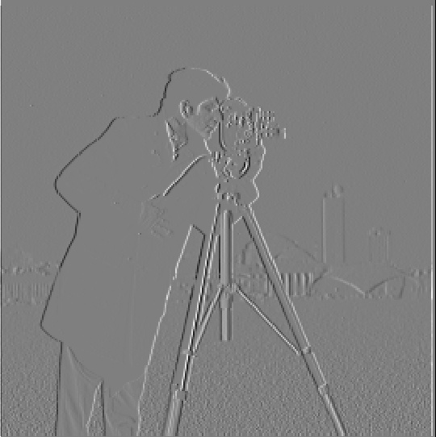
∂I/∂x (Dx)
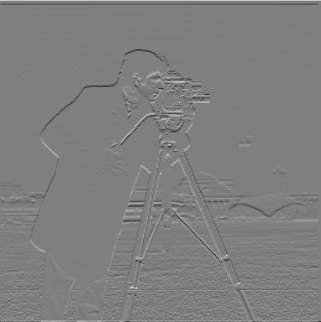
∂I/∂y (Dy)
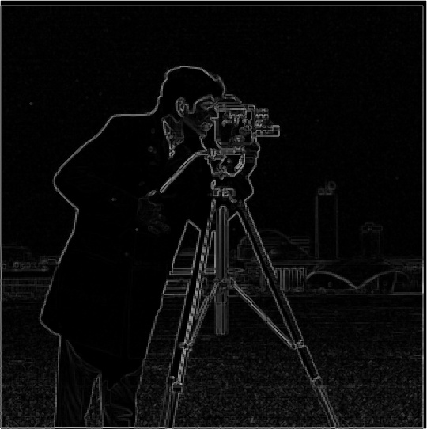
gradient magnitudebinarized edges (threshold 0.3)
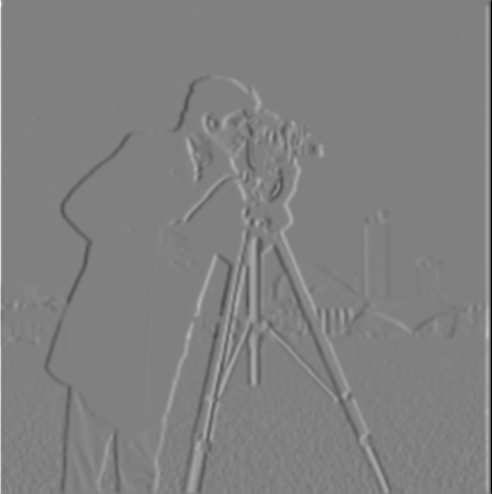
∂I/∂x on smoothed image
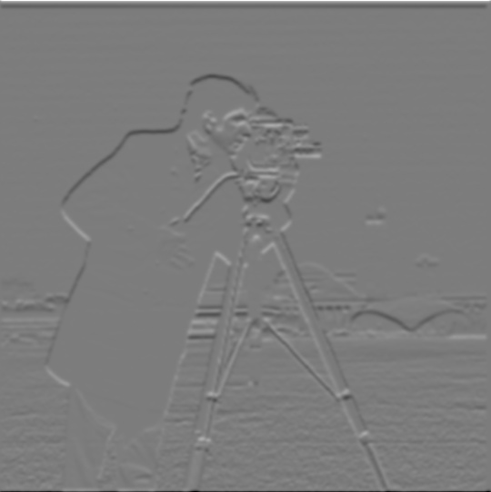
∂I/∂y on smoothed image
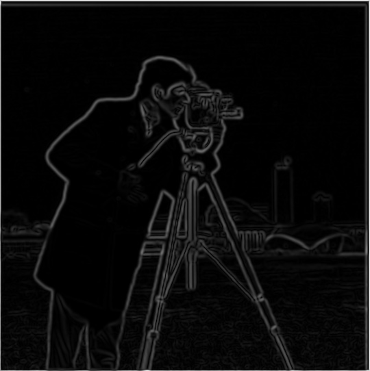
smoothed gradient magnitude
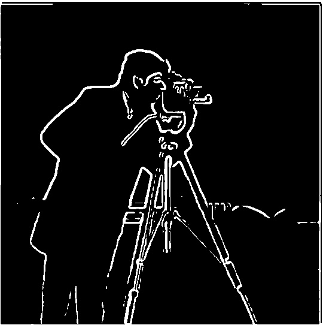
binarized edges on gradient magnitude (threshold 0.15)
In the previous part, I applied two convolutions to the cameraman image to produce a smooth image. However, by taking advantage of the derivative property of convolutions, I reduced the number of convolutions performed by finding the derivative of the gaussian by convolving the derivative and gaussian filters, then applying this new filter to the image, then taking the gradient magnitude. This produced identical results to the previous part, which I verified numerically with np.allclose between the two-step (blur, then differentiate) and one-step (convolve directly with the DoG filter) pipelines, in addition to visually comparing the two output images.
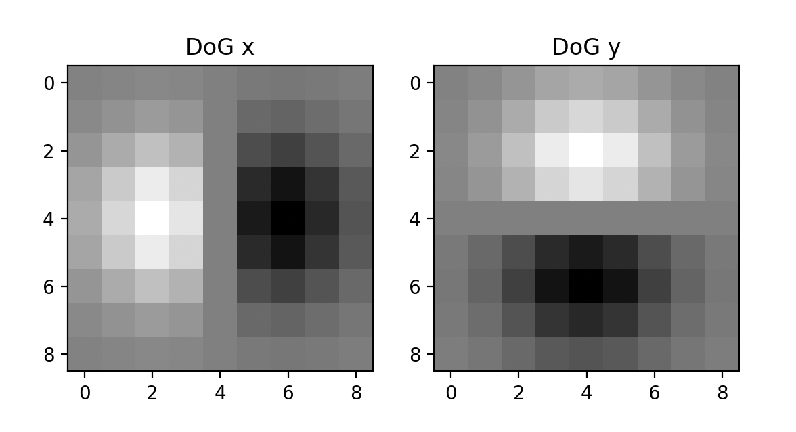
DoG filters (Dx, Dy)
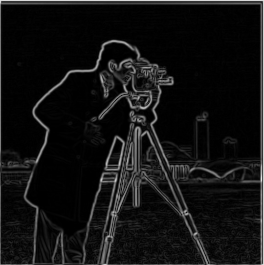
gradient magnitude after Gaussian smoothing
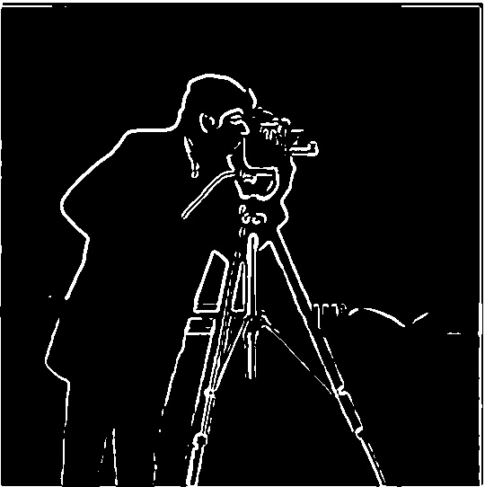
binarized DoG edges
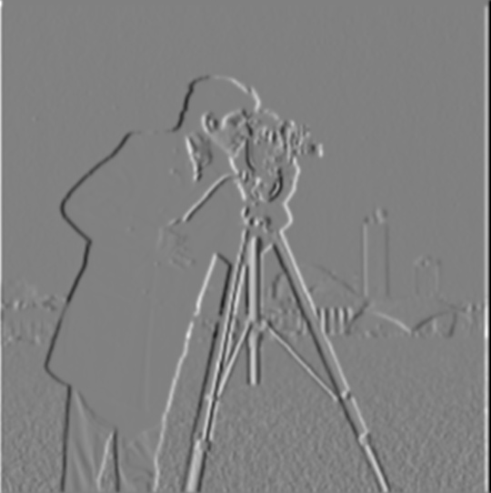
DoG ∂I/∂x
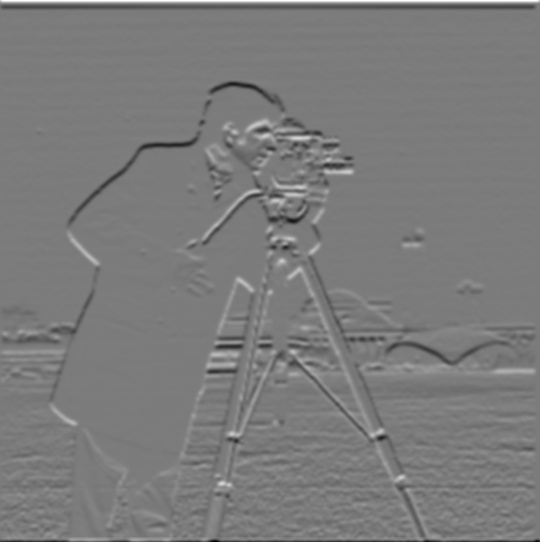
DoG ∂I/∂y
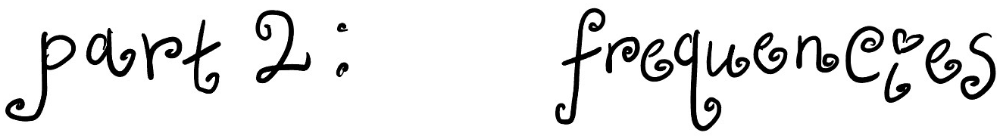
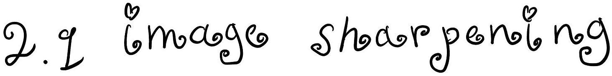
In this part, I implemented an unsharp mask filter. This was done by taking an impulse filter, which when convolved with an image does not change it, and subtracting a gaussian from this. This results in a filter that gives us the high frequencies. This can be thought of as taking an image and subtracting the low frequencies from it, leaving only the high frequencies. Adding this high frequency only image to the original will amplify the high frequencies in the image, making it appear more sharp.
I applied this to the Taj Mahal image as well as another image of my choice, and in both cases the sharpened version showed more defined edges and texture compared to the original. I also experimented with varying the strength of the sharpening by scaling how much of the high-frequency component got added back in. A small amount produced a subtle sharpening effect, while pushing the strength higher made edges look more exaggerated and started to introduce visible halos and amplified noise, especially in flatter regions of the image.
After making this sharp, I also played around with blurring and sharpening to see how this affected the frequencies present in the image. I tried making the image sharp, then blurred, then sharpening this image again. Though the initial sharpening made the high frequencies amplified, blurring it removed all of this and left only the low frequencies. Sharpening it again did not return the image back to the original, because after the blur it lost the information of the high frequencies that were present in the original. Therefore, applying the sharpening filter after this resulted in amplifying the frequencies that were high in the blurred, lower frequency image, but overall not as high or the same as the frequencies in the original image.
Using our knowledge of gaussian and laplace filters to amplify low and high frequencies, I created hybrid images. Hybrid images work because at closer distances, human eyes better perceive high frequencies, while from farther away, they perceive low frequencies better. After using the provided function to align images, I then combined the 2 images to select either the high or low frequencies from them to combine. For the first image, I took the high frequencies by subtracting the original image by the image convolved with a Gaussian kernel. For the second image, I convolved this with a Gaussian kernel to get the low frequencies, then added the two images together.
I selected different sigma values based on the size of the kernel and the cutoff of frequencies that I wanted to keep for the high and low frequency images. A higher sigma meant that the Gaussian kernel had a less steep peak, while a low sigma meant the Gaussian kernel was closer to a unit impulse with a steep center. This translated to what frequencies it would pick up. A wide sigma in the spatial domain translates to a narrow Gaussian in the frequency domain, which results in a very aggressive low pass filter that tunes out a lot of the high frequencies. If I wanted to create a very aggressive hybrid image, I would select a high sigma to get only super low frequencies for the low frequency image, and a very low sigma to only tune out a few of the highest frequencies, because once this image was subtracted from the original the high frequency image would be made up of just these high frequencies. However, this does not produce a very good hybrid image, so I instead chose to pick sigma values that were more even. This meant that only a thinner band of medium frequencies was completely eliminated from both of the images.
Derek (input)Nutmeg (input)
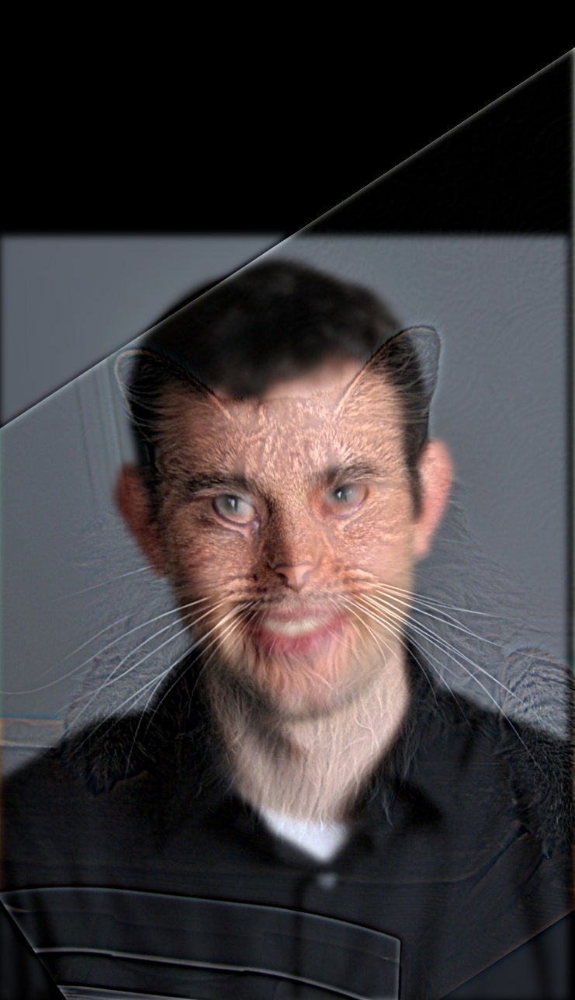
hybrid result
Additional hybrids (inputs + result):
Rachel + Julia! (full process): For my favorite result, I illustrated this process with frequency analysis by taking the log magnitude of the 2D Fourier transform of both input images, the filtered (high-pass and low-pass) images, and the final hybrid. The original images showed most of their energy concentrated near the center of the spectrum with some spread outward, the low-passed image showed energy concentrated in a small bright region at the center with the surrounding frequencies suppressed, and the high-passed image showed the opposite. There was a dark hole at the center where I removed the low frequencies, with the remaining energy toward the outer, high-frequency region. This matched what I expected given the cutoff each sigma should produce.
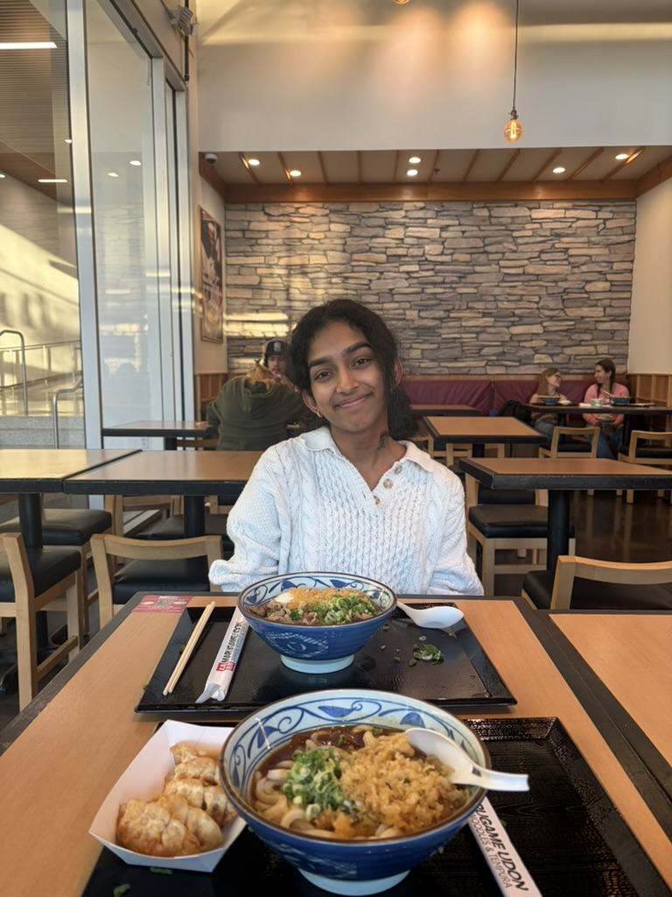
Julia (input)
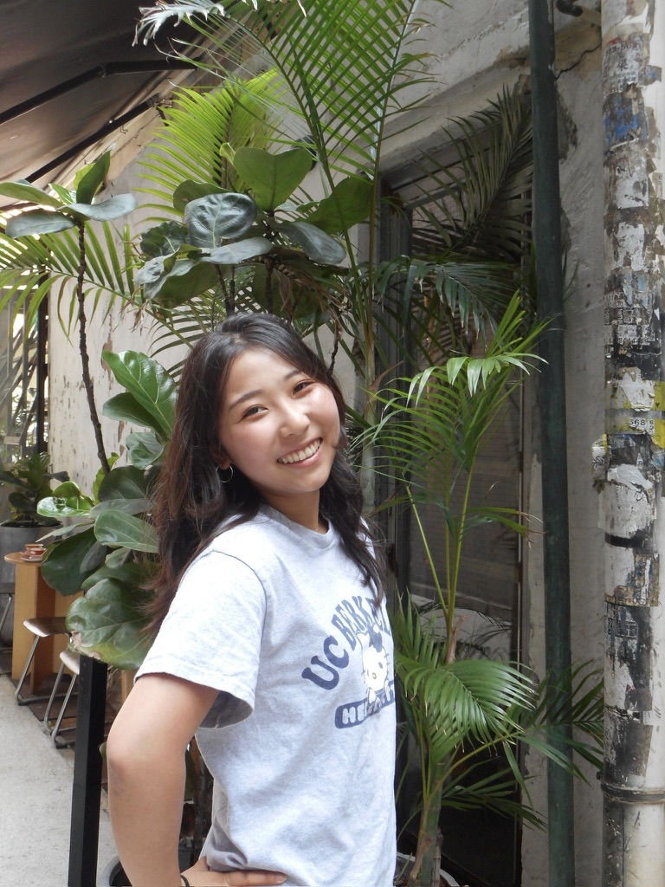
face (input)
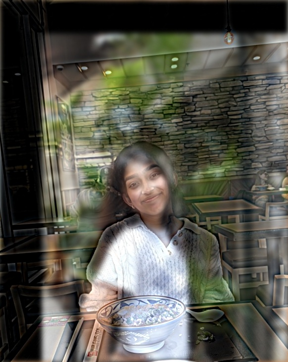
hybrid
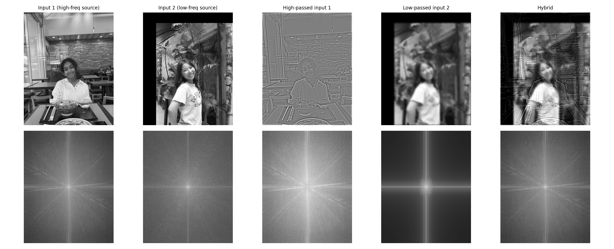
frequency analysis
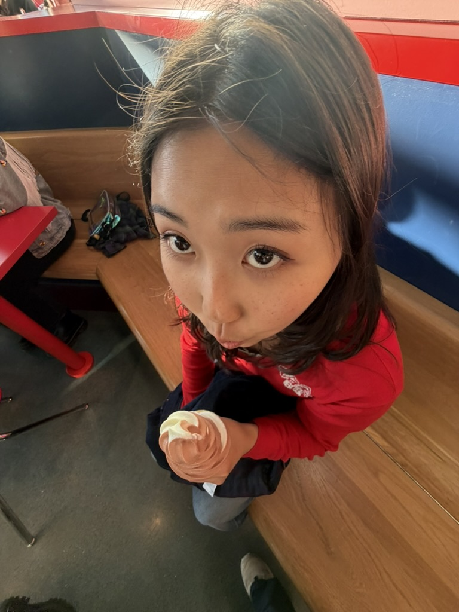
selfie (input)
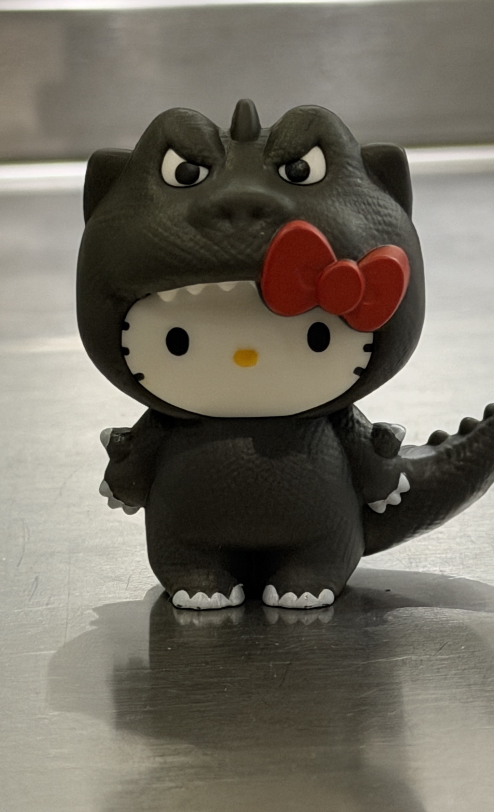
hello kitty (input)
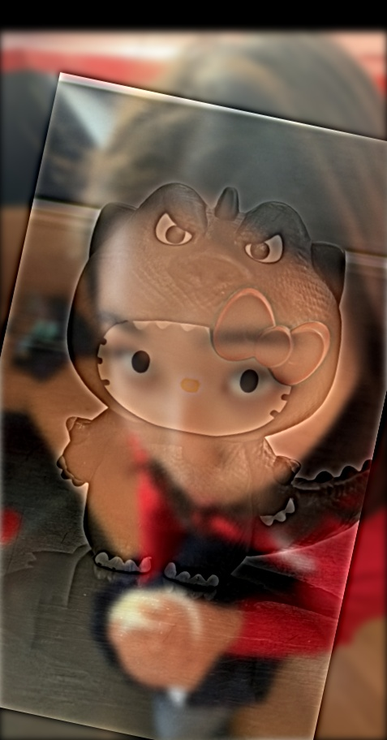
hybrid
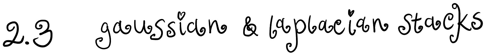
I also implemented Laplacian and Gaussian stacks. This works by applying a Gaussian filter to an image, subtracting that from the original image, and then the result is the first layer in the Laplacian stack. Applying an increasingly strong Gaussian filter to the previous layer in the Gaussian stack, then subtracting the two layers to get another layer of the Laplacian stack allows us to remove high frequencies in the original image while still preserving the high frequency details. Each layer in the Laplacian stack represents a band of frequencies, with the value of the frequencies decreasing with each layer in the stack. This is because it is basically preserving the difference between a Gaussian that contains no high frequencies, and then another Gaussian that has eliminated even more of those high frequencies. Therefore, the Laplacian preserves those middle frequencies that got eliminated once the stronger Gaussian was applied.
I applied this to the apple and orange images to recreate the outcomes of Figure 3.42 in Szeliski, showing several levels of the Laplacian stack for each image individually as well as their masked contributions once combined for blending.
Apple + orange stack levels
Laplacian — apple
Laplacian — orange
blended Laplacian
Gaussian mask
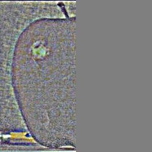
0
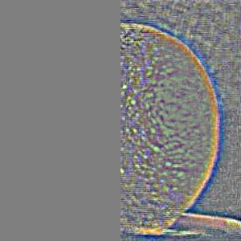
0
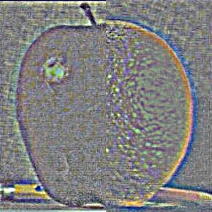
00
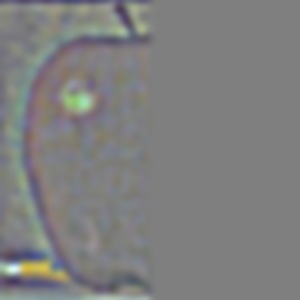
1
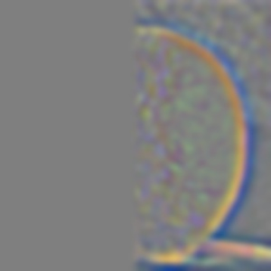
1
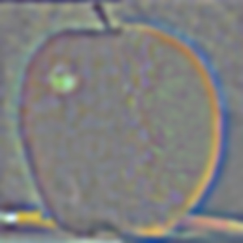
11
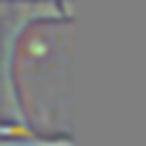
22
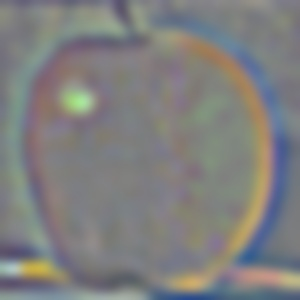
22
3
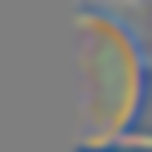
3
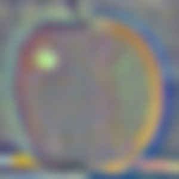
33
44
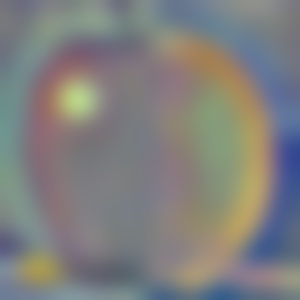
4
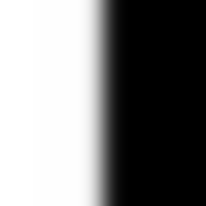
4
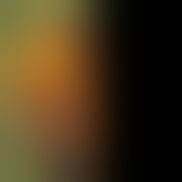
apple (left)orange (right)oraple
These stacks are especially helpful when doing multi-resolution blending. This is because naively blending frequencies, or simply slicing and combining two images, creates a really sharp seam. This is the case when the blending window is too narrow, so low frequency parts of the image are cut off and look abrupt. However, having a blending window that is too wide can result in ghosting of high frequency portions of the image in the transition. A better way to approach this is to find bands of similar frequencies, then select the window based on that, matching narrow windows with high frequencies and so on. This is accomplished by creating a Laplacian stack, and multiplying it with a mask that corresponds to the frequency level.
Lic = Gi · Lia + (1 − Gi) · Lib
Each level of the Laplacian stack captures a specific band of frequencies, obtained by taking the difference between two successively blurred versions of the image. If you sum every Laplacian level together, plus the final, most-blurred residual level, the intermediate blurred terms all cancel out, with each level's subtraction undone by the next level's addition, leaving just the original image. Concretely, if Li = Gi − Gi+1 for each level, then summing all the Li terms telescopes:
which is just the original unblurred image. The stacks are lossless because they are a full decomposition of the image into frequency bands that can always be added back together to exactly recover what you started with. For blending, since each blended Laplacian level Lic is a weighted combination of the two source images' Laplacian levels at that frequency band, summing all the blended levels together reconstructs a full image in exactly the same way, except now each frequency band was blended with its own appropriately-sized transition, rather than using one single hard cut across every frequency at once. The coarse, low-frequency content transitions over a wide area (since it comes from heavily blurred levels), while the fine, high-frequency detail only transitions right at the seam itself (since it comes from the barely-blurred levels), and both get added back together into one final image that reconstructs correctly everywhere except at the blended boundary.
I verified this reconstruction property directly by running my blend function with an all-ones mask, which should return one of the two source images unchanged. This confirms that my stacks were summing back to the original correctly before I trusted them for actual blending.
Now that I've made myself an oraple with a vertical seam working correctly, I also blended two pairs of images — one using a horizontal seam, and the other an elliptical seam.
Piggy Kitty BlendPagoda Minecraft BlendOrange Apple Blend
[Irregular-mask and custom seam blends using Gaussian mask stacks and Laplacian blending (Burt & Adelson Fig. 10 style).]
Pagoda + suburban (house blend):
Pagoda TopSuburban Bottom
MaskPagoda Minecraft Blend
Laplacian — pagoda
Laplacian — suburban
blended Laplacian
Gaussian mask
0000
1111
2222
3333
4444
5555
6666
6666
pagoda (top)suburban (bottom)blend
Pig + kitty (irregular mask):
Laplacian — pig
Laplacian — kitty
blended Laplacian
Gaussian mask
0000
1111
2222
3333
4444
5555
pig (center)kitty (outer)blend
The most important thing I learned from this project was how frequencies work in images, and what filtering really does! I've taken EECS 120 before, so it was really satisfying to see how the Fourier Transform represents images in the frequency domain, as well as implementing a 2D convolution by myself. In the hybrid images example, I thought it was really cool how high frequencies and low frequencies are depicted in the Fourier domain. I learned a lot about how Gaussians work, how kernel size and sigma values impact how images are smoothed. This distinction tripped me up early on (I initially kept kernel size fixed while increasing sigma, which broke my blending because the Gaussian was getting cut off rather than actually getting wider), and debugging that gave me a much better intuition for the relationship between the spatial and frequency domains.